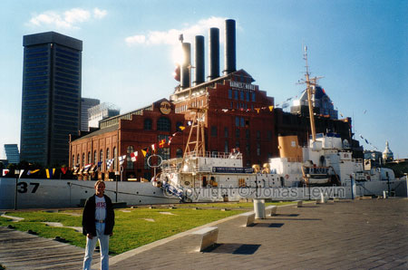
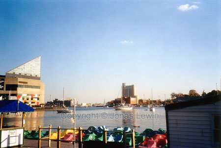
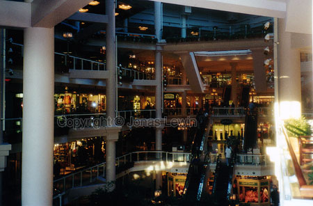

|
USA, Baltimore, 1999-08
Baltimore
seems to be just a suburb to Washington.
If
you feel like visiting, then you should go down to the harbor. There is
almost nothing else to see in Baltimore, and the harbor is very beautiful.
Lots of fast food places to dine. Some malls for you if you want to go
shopping. I spent 2 hours in the harbor, and checking out the malls. After
that I couldn't find any fun places to go.
When
driving out of Baltimore, I found the largest black neighborhood I've ever
found in the US. The living conditions where terrible there. It must be
difficult to go be black and pour in the US. It makes me feel fortunate that
I'm not one of them.
A
typical mall.
If you hear people from the US saying that you can drink the water, then you
should believe them. I would however not define the liquid coming out of the
tap as water. That liquid is better defined as chloride, fluoride and water
mixed, and smells/tastes terrible. So when they say that you can drink the
water, you know that they actually refer to bottled water.
|